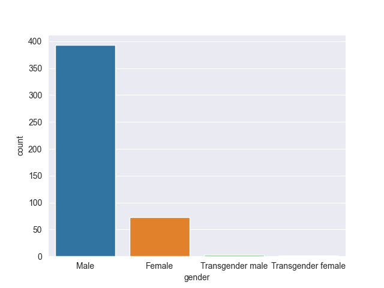
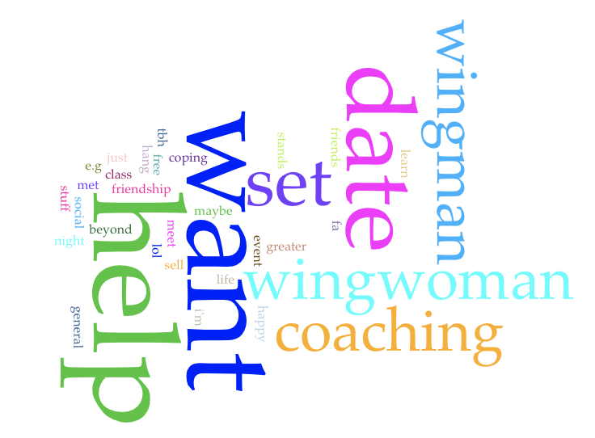
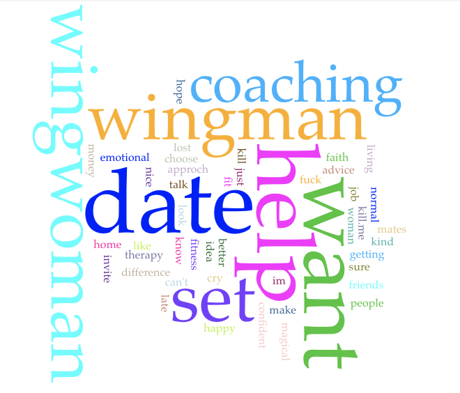
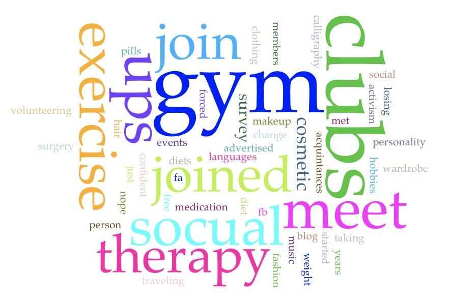
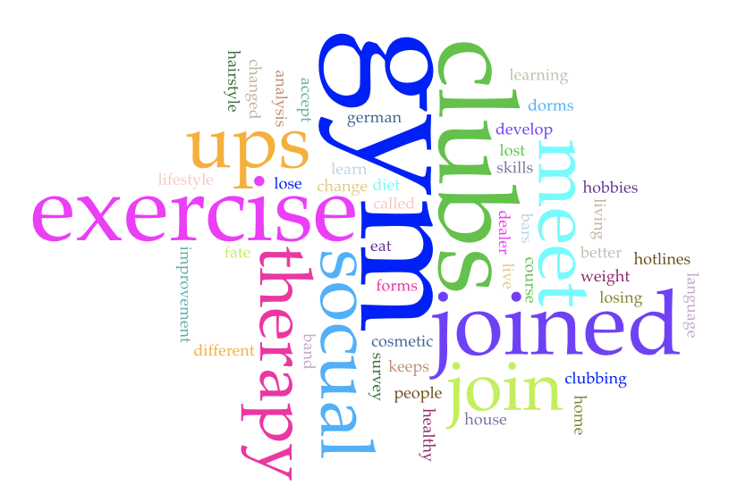

and Gender
and Gender
Project Overview
In this project, we will be focusing on Reddit and gender. With sentiment analysis and data visualizations,
our findings will demonstrate the relationship between subreddit demographic and activity.
r/ForeverAlone
r/ForeverAlone is a subreddit for Forever Alone Folks.
It has 166k members and was created on September 15, 2010. The 9 rules of this subreddit are:
- Be polite, friendly and welcoming.
- Do not tell anyone they are not forever alone enough to be here. Foreveralone has no firm definition.
- No inflammatory comments.
- No incel speak or references.
- No linking to other subreddits or personal blogs.
- No trolling.
- No Creating Drama.
- Do not post your dick.
- No "rate me" threads.
Using The Demographic
/r/ForeverAlone Dataset available on Kaggle, we created data visualizations to highlight the relationship between
gender and friends, mental health, etc. In 2016, a survey was posted to the r/ForeverAlone subreddit, asking questions such
as "What is your Gender?", "Do you have social anxiety/phobia?", and "Are you depressed?". The survey got 469
responses from redditors active on the r/ForeverAlone subreddit; this data is our dataset for this section.
This subreddit is very male-heavy, with 84% of respondents identifying as male and 16% identifying as female.

The question "What kind of help do you want from others?" was a select all type of question. For respondents who identify
as female (n=73), the most frequent words are help (42); want (41); date (29); set (17); coaching (12). However, looking at
the frequency of help alone is misleading because it is used within the phrase "I don't want help."

For respondents who identify as male (n=393), the most frequent words are date (235); help (195); want (193); set (146);
wingman (115).

The question "What have you done to try and improve yourself?" was another select all that apply question. For respondents
who identify as female, the most frequent words are clubs (62); gym (58); exercise (31); join (31); meet (31).

For respondents who identify as male, the most frequent words are gym (320); clubs (218); exercise (164); joined (162);
join (109).

Sentiment Analysis
The Sentiment Analaysis data collected comes from the Google Coarse-Discourse github page.
Using the raw data, we collected the text and subreddit headings from the JSON file and created plain text files with this information.
Next we used the nltk VADER package to run sentiment analysis on all of the collected subreddit threads in an attempt to determine if overall, reddit
is a supportive environment.

This visualization shows data from the 255 subreddit threads which had the most textual data. This data demonstrates
reddit much higher levels of positive sentiment than negative. This may be surprising given
Conclusion